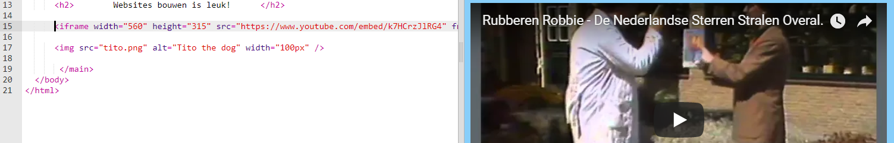

Een kaart of video toevoegen
YouTube biedt een eenvoudige manier om video's aan je website toe te voegen. Het toevoegen van elementen uit andere online bronnen aan je website wordt ook 'insluiten' genoemd.
-
Zoek een video op YouTube die je op je website wilt laten zien.
-
Klik op de knop Delen onder de video. Selecteer de optie Insluiten.
Je ziet een tekstvak met alle tekst geselecteerd. Als je per ongeluk de selectie van de tekst ongedaan maakt, kun je alles opnieuw selecteren door erop te klikken en tegelijkertijd op de toetsen Ctrl (of cmd op een Mac) en A te drukken.

-
Druk op de toetsen Ctrl (of cmd op een Mac) en C samen om de tekst te kopiëren.
-
Ga vervolgens terug naar de HTML-code van je website en klik op de plaats waar je de video wilt plaatsen, bijvoorbeeld onder een kop of alinea.
Plak de code door tegelijkertijd op Ctrl (of cmd op een Mac) en V op je toetsenbord in te drukken. Maak je geen zorgen over het begrijpen van alle code die je zojuist hebt geplakt!

Je zou de video op je webpagina moeten zien verschijnen.
Dezelfde techniek werkt ook voor Google-kaarten. Probeer het maar!
-
Ga hier heen en zoek naar een plaats die je op je website wilt laten zien.
Opmerking: deel geen persoonlijke gegevens zoals je thuisadres op een website!
-
Klik op het resultaat, klik vervolgens op de knop Delen en kopieer de code en voeg deze toe aan je website zoals hierboven.
-
Als je goed kijkt, vind je de attributen
width en height in de geplakte code. Je kan hun waarden wijzigen om de kaart groter of kleiner te laten lijken.